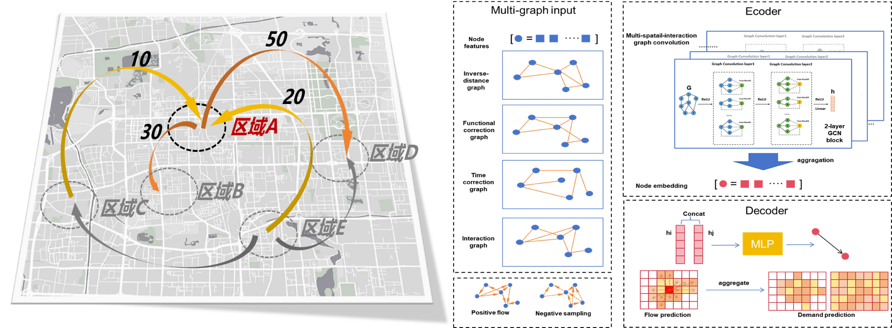
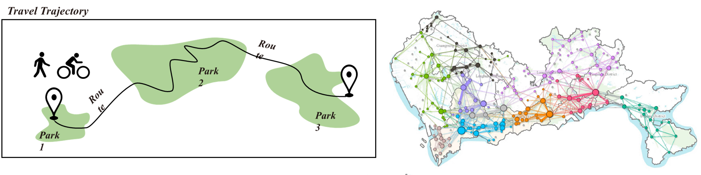
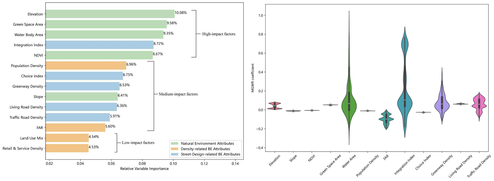
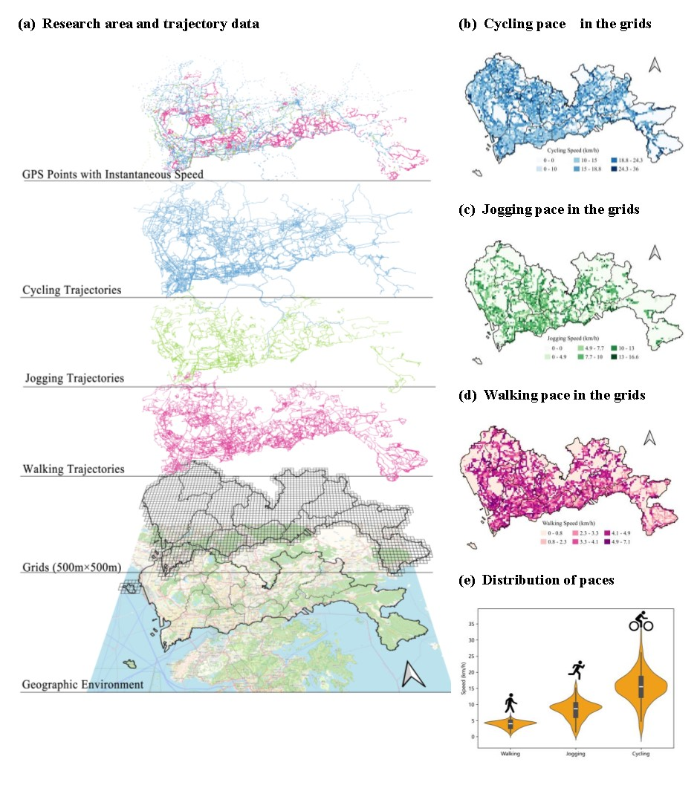

Chengbo Zhang
Master Student in Urban Planning
- 📍 Shenzhen, China
- ✉️ zhangcb0027@foxmail.com
- 🐙 GitHub
- 📒 Google Scholar
Spatiotemporal Data Mining of Instant Delivery Network
Instant delivery has shaped a unique mobility pattern in urban areas, which is closely linked with various traffic issues. In this regard, I aim to reveal the spatiotemporal characteristics of the supply-demand pattern within the instant delivery network and develop a practical graph learning framework to predict the delivery flow between urban areas- Uncover the Dynamic Community Structure of Instant Delivery Network (Working paper)
- Prediction of Instant Delivery Demand Using Multi-Spatial Interaction Graph Convolutional Networks (Working paper) 


Association of Active Travel and Urban Environment
Individuals' travel behavior has long been demonstrated to be associated with the contextual effects of environmental settings. In following research, I utilize locational big data to analyze active travel (AT) trajectories, focusing on the nuanced environmental impacts on both the vitality and pace of AT revealed by machine learning methods. By doing so, it aims to contribute to effective policies for sustainable transport planning
- Green Space Network Formed by Travel Behavior(In preparation) 
- Community Park Visits Determined by the Interaction Between Built Environment Attributes (Published in Applied Geography)
- Spatial Heterogeneous Environmental Effect on Outdoor Jogging (Under Review) 
- Environmental Influencing Patterns on the Pace of Active Leisure Travel (Under Review) 